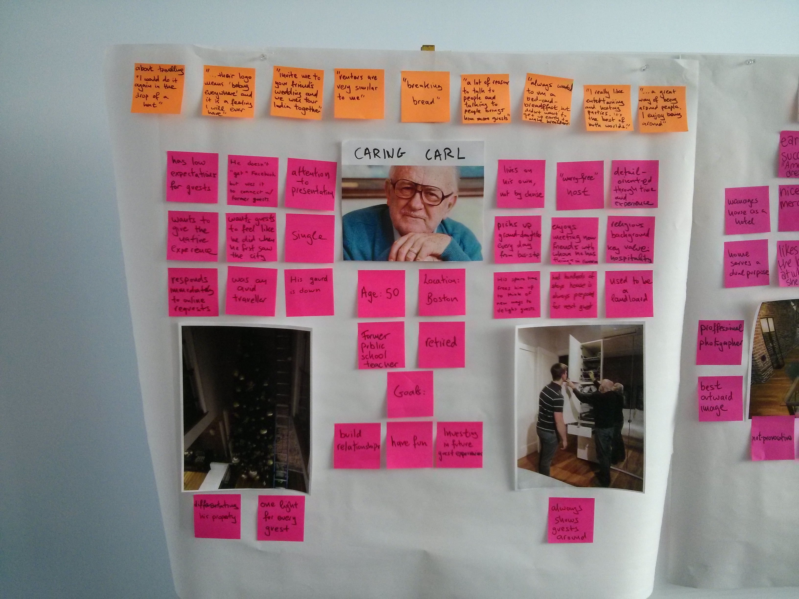

User Oriented Collaborative Design
In the Spring of 2015 I took a class at Olin called "User Oriented Collaborative Design". UOCD has been the favorite class I have taken at Olin thus far. Engineering students learn how to code, debug circuits, build structures. And that's awesome. However, we are rarely taught the purpose we are designing for. We are never asked to develop a deep appreciation for the users we are developing a product for and whose lives we are aiming to change with the product. As engineers, we ought to engage with the user group we are building a product and make sense out of the feedback we get form that group as to what/why/how we should be building.
UOCD focuses on user-oriented, collaborative approaches to design seeking holistic solutions integrating user and functional perspectives.
Airbnb Hosts
The user group that my team extensively studied for the semester was "Airbnb Hosts". The first phase of the class had us start off by exploring the stakeholders involved and drawing as many insights as we could. We observed, we asked, we tried, we did, we said, we thought and we felt. We acted like sponges. We soaked, squeezed, and tried to make sense.
After talking to our stakeholders, we created personas that represented key characteristics, trends and insights we got from our interaction with our user group.

Conceptualize
It was also really crucial to zoom into the feeling and emotions that those personas have and develop an interaction map that illustrated such fundamental relationships.
The second phase of the class really pushed the team to be creative. Using the personas we had earlier developed, we brainstormed about "blue-sky" ideas that would suit their needs and values, while trying to express those ideas in gallery sketches.
Identifying Problems
Throughout the semester and in the beggining of every phase, our team reflected on the current progress and individuals shared ideas, thoughts and roadblocks that people are facing and, collectibely, we tried to find ways to resolve them.

Develop
The final phase of the class focused on clearly identifying the requirements for our design and validating the decisions that were made. Finalizing those points, as well as, clarifying needs and other factors, such as metrics, for the relevant stakeholders was crucial for identifying key needs that arose in multiple stakeholders' lives.
Finally, the following image indicates the illustrated steps that a user would go through on our design proposal.
Checkout the Final Product Interface